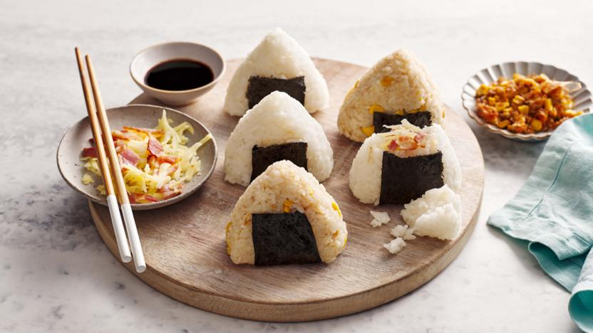

Onigiri

Description
A quick, easy, ready to go Japanese favorite!
Ingredients
- 4 cups Sushi rice
- 3 small tins of Sandwich Tuna
- Kewpie mayonnaise
- Nori sheets
- Salt
Equipment
- Rice cooker
- Triangular onigiri container
- Plastic cling wrap
Steps
- Wash and rinse rice under running water.
- Cook rice in a rice cooker.
- Whilst the rice is cooking, strain sandwich tuna in a medium size sieve to remove oil. Use a tablespoon to squeeze out the oil.
- Place tuna in a bowl and add Kewpie mayonnaise until it is a consistency that you prefer.
- Fluff the rice with a rice ladle after the rice is cooked.
- Place plastic cling wrap into onigiri container.
- Add salt to the cling wrap.
- Half fill container with rice.
- Place a tablespoon of tuna mayonnaise mix on rice and flatten out.
- Fill the remaining half of the container, shaping it into a triangle.
- Take a nori sheet and place on table.
- Place triangle rice 'ball' on the middle of the top edge of the nori sheet, so that most of the nori sheet covers onigiri but only a small part will poke out.
- Fold the nori sheet, wrapping it around the rice 'ball'.
- Eat and enjoy!